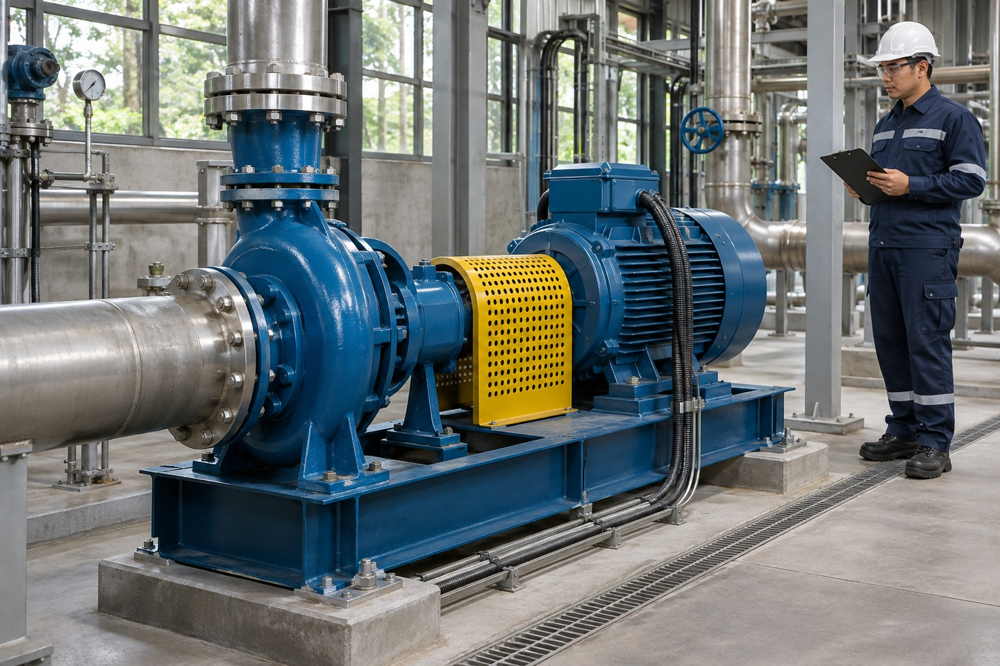

VISION + THERMAL
看得见现场，也看得见温差。
可见光与红外热像联动，把热点放回现场位置。


感知，先于判断
为设备运维班组而生。把分散的现场信息放在同一个工作台，让巡检员、工程师与班组负责人围绕同一份证据协作。
VISION + THERMAL
可见光与红外热像联动，把热点放回现场位置。
ACOUSTIC INTELLIGENCE
从六麦采样到空间响应，缩小优先复查的方向。
CONNECTED EVIDENCE
设备、测点、事件与报告，串起完整的巡检记录。
信号背后，自有线索
波形记录变化的时刻，频谱揭示能量集中的频率。用清晰的坐标、可读取的数值，支持每一次现场复查。
读取波形、频谱与时频特征，先确认异常出现的时间和频带。
结合声学成像的空间响应，确定值得优先复查的方向。
保存原始录音、分析图与同期证据，支持同类工况复测。
听见，也能看见
把麦克风阵列的空间响应叠加在现场画面上。按目标频率或宽频带观察，让排查更有方向。

红外热成像
从一帧热图到一段温度趋势，观察设备表面的温度分布，把热点位置与同期画面一起留下。

查看最高温、最低温与中心点温度。画面配准后，联动标记可见光与热像位置。
沿温度曲线观察局部温升，记录热点位置与变化过程。
按最高温或升温速度设置告警。事件关联同期证据，便于安排复测和跟进处理。
热点定位
温度趋势
温升告警
同期取证
同一时刻，同一件事
画面是一帧，声音是一段，热像有自己的采样时刻。以触发模态为基准对齐，并保留各路偏差，让证据之间的关系清晰可查。
该次板端联测匹配可见光、声音与热像三路证据。默认软件容差为 250 ms，超差或缺失项会在事件详情中标明。
以一次热像告警为例，核对原始采样时间与事件基准。
以触发数据的时刻建立事件，分别保留采样时间和入库时间。
图像按帧时间匹配，声音按采样区间关联到同一事件。
显示各路时间差与缺失项，按任务配置容差并保存对齐结果。
可见光与视频理解
实时预览、拍照和录像，将现场对象与设备状态留在画面里。结合目标检测与多帧分析，沿时间观察变化。

对图像或摄像头画面执行目标检测、实例分割与关键点识别，查看对象位置与检测结果。
设定现场观察区域，将目标进入与相应的画面、触发时刻关联起来。
带时间戳的连续画面进入板端分析，让视频中的过程保留先后关系。
板端多模态大模型
画面、语音、测量读数与工程资料共同参与问答。按输入类型调用本地模型，保存分析依据与复查建议。
结合语音转写、测量读数、问题与工程文字资料，整理异常线索，给出可能原因和后续复查项。

按设备与测点选择画面、声音、热像或文字，保留输入来源。
把时间对齐信息、可提取指标与巡检读数一并交给板端模型。
将带证据引用的分析结果关联事件，继续复核、整改与归档。
语音记录与交接
采集或导入交接录音，用说话人轨道定位发言片段。转写、声谱与原音在同一时间基准下回查。

维护本地声纹资料，结合分段与聚类组织发言轨道。
支持指定语种转写，保留片段起止时刻与对应录音。
沿时间轴回听设备名称、读数与待办，补充到巡检记录。
一个平台，贯穿现场与处置
观澜 Terminal 与观澜 Studio，构成同一巡检平台的两种工作视角。
现场感知与板端分析
基于 RK3588 主机与 RK1828 推理加速器，连接摄像头、麦克风阵列和红外热像仪，在板端完成采集、检测与本地模型问答。
按设备、部件与测点组织现场资料。
工程支持新建、导入、保存与归档。
按 UTC 时间关联多模态资料。
保留诊断引用，用工程图谱组织证据。
巡检报告呈现任务结果，事件报告保留异常依据。
支持 PDF 导出、版本管理与业务备份。
一次巡检，连贯发生
现场留下的信息，随着工作推进，成为下一步的依据。
CAPTURE
选择设备与测点，同时采集画面、声音和热像。原始信息从一开始就有明确归属。
深入真实工作

在相近负载下采集声音，核对频谱峰值与疑似声源方向，再结合轴承座表面温度，安排现场复查。
原始录音、频段、声源方向与同期温度
技术规格
以板端计算连接多模态传感，以工程数据贯穿完整巡检流程。
观澜 SPECTRA
从一次采集，到下一次交接。为设备运维建立持续可查的现场记忆。